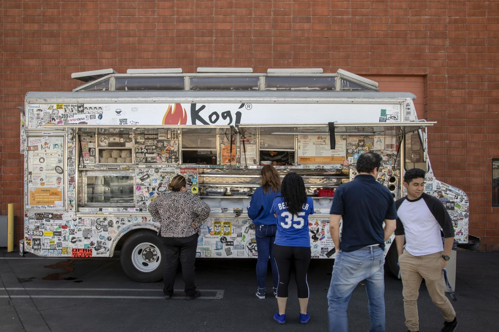
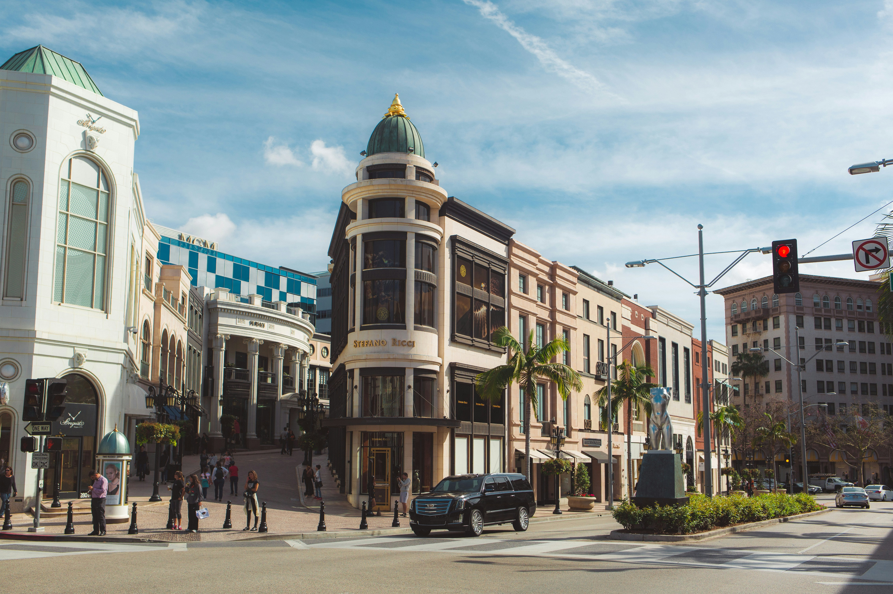
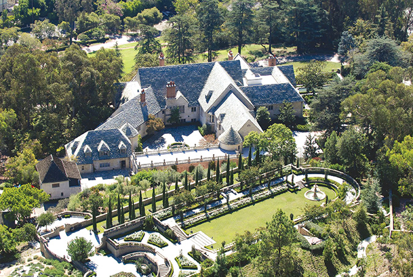

Los Angeles is a major food destination because of its diversity. For years, worldwide flavors have converged in this city, making LA food culture a hot topic for foodies. LA chefs are well known for their ability to craft menus based on international ingredients and culinary techniques. The French dip sandwich is a must-try dish. It was created in Downtown LA, but its growing popularity placed it all over the city. Smoked salmon pizza was created in the ’80s, and this iconic Los Angeles dish is made with smoked salmon, dill cream, chili and garlic oil, red onion, and chives. Another traditional Los Angeles cuisine must-try dish is the well-known pastrami sandwich.
Food Trucks and Street Food

Mexican food has had a big influence on Los Angeles’s signature dishes. Tacos are a street food favorite for many, as they are flavorful, fresh, and easy to get. Besides taco trucks, there are plenty of other street foods like Thai or Korean BBQ, or even Chinese cakes. You won’t be able to get far without seeing a food truck serving your next best meal.
International Cuisine
As a melting pot of different cultures and flavors, Los Angeles has an endless selection of international cuisines to try out. No matter where in LA you are, you’re bound to find a cuisine you’ve never tried before. Exploring these restaurants is strongly encouraged, and you might just find your new favorite. Whether it’s Portobanco’s for Nicaraguan cuisine or Borneo Eatery for Indonesian, Malaysian, and Singaporean cuisine, be bold and try something new!
Celebrity Restaurants
Celebrity-backed hot spots are especially common in LA. These restaurants are either owned by celebrities or famous for being frequented by celebrities. If you’re looking for a fine dining experience with a chance to spot A-Listers, Los Angeles is not short of options. Nobu Malibu by Robert De Niro is one of the most well-known celebrity restaurants in LA.
Shopping
Rodeo Drive

Rodeo Drive is a three-block stretch of street in Beverly Hills, California, with its southern segment in the City of Los Angeles, known as one of the most expensive streets in the world. This iconic, palm tree-dotted, luxury fashion street invites you to visit the world’s leading fashion houses and brands as they present the finest and most innovative collections, and to experience and enjoy the legendary hotels and award-winning restaurants offering unparalleled hospitality and culinary excellence. Rodeo Drive is home to more than one hundred of the world’s leading international brands housed in exemplary, architect-designed boutiques. There is also a selection of modern and refined dining experiences from outdoor patio and poolside dining to groundbreaking contemporary dining spaces, where a diverse culinary offering prepared by celebrated and Michelin-starred chefs can be enjoyed by all.
The Grove
The Grove seamlessly fuses high-end retail with a heartwarming sense of community. It’s a place where people spend whole days shopping, dining and connecting with loved ones while strolling by the dancing fountain and soaking up the energy around them. Through it all runs an iconic trolley, an attraction that not only delights guests, but also connects The Grove to the Original Farmers Market, a culinary landmark and source of immense pride for the surrounding community. The Grove pulses with style, warmth and excitement, which is why the world’s leading brands and personalities come here to launch their latest creations and engage their fans.
Fashion District
The Los Angeles Fashion District, previously known as the Garment District, is a business improvement district in, and often cited as a sub-neighborhood of, downtown Los Angeles. Spanning 100 blocks in the heart of Downtown LA, the Los Angeles Fashion District is the hub of the LA fashion industry, featuring more than 4,000 independently-owned retail and wholesale businesses with apparel, accessories and footwear for the entire family. The neighborhood caters to wholesale selling but have both retail and wholesale businesses selling apparel, footwear, accessories, and fabrics. The district is also home to the lively Santee Alley, the largest selection of fabrics and notions in Southern California, and the LA Flower District, the largest flower market in the United States.
Local Markets
Every week, neighborhoods across Los Angeles host farmers' markets that offer an incredible selection of fresh produce and artisanal food. These markets are also community hubs, featuring local vendors, DJs, live music, and kids activities. There are also tons of flea markets happening in LA often, with the Rose Bowl Flea Market being the largest. Local markets are good for leisurely shopping and finding unique souvenirs for friends and family.
Travel Tips
Los Angeles on a Budget
If you’re visiting LA on a budget, you can still have a fun and enjoyable trip. Spending time outside is a great way to explore the city without breaking the bank. Visit a beach, take a dip in the water, and hike around the beach for a scenic walk. Walk around Hollywood to see film and TV locations without booking a tour. If you don’t want the hassle of renting a car to get stuck in LA’s notoriously bad traffic, take public transportation or rent a bike!
Lesser-Known Attractions

Los Angeles has so many attractions that it’s hard to choose what is worth seeing. Some of these are often overlooked and not as well-known as others. The Huntington is one of these “hidden gems.” It offers 130 acres of beautiful and biodiverse gardens; iconic collections of art, history, and literature; and dynamic programs that provide transformative experiences for a community of the curious. The Greystone Mansion is a Tudor Revival mansion in Beverly Hills. It’s open to the public and free to tour.
Safety and Transporation Advice
Los Angeles is a large, car-oriented city, so planning transportation in advance can make travel safer and more efficient. Visitors should use reputable rideshare services, taxis, or public transportation when possible and avoid walking alone in unfamiliar areas late at night. If driving, be prepared for heavy traffic, allow extra travel time, and always keep valuables out of sight when parking. Staying aware of your surroundings, keeping your phone charged, and sharing your itinerary with someone you trust can further improve personal safety. By taking these simple precautions, travelers can enjoy Los Angeles with greater confidence and peace of mind.
Exploration is Encouraged
Los Angeles offers a wide variety of attractions that encourage visitors to explore its diverse neighborhoods, cultures, and landscapes. From world-famous museums and historic landmarks to scenic beaches and hiking trails, there is something to match nearly every interest. Travelers are encouraged to venture beyond the most popular tourist destinations to experience local restaurants, vibrant arts districts, and unique cultural communities. Exploring different areas of the city provides a deeper understanding of Los Angeles's history, creativity, and diversity, making for a more memorable and enriching visit.
If you're feeling overwhelmed by how much there is to do in LA, watch this video for a travel itinerary of 30 things that can be completed over four to seven days!